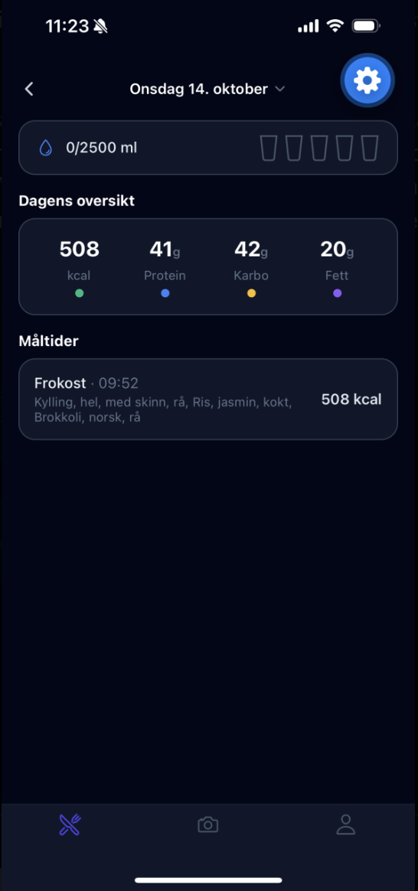
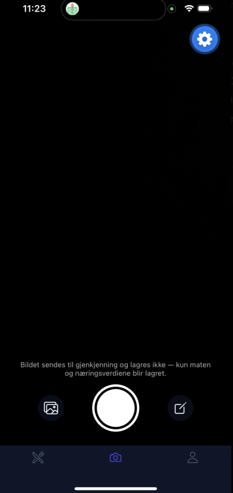
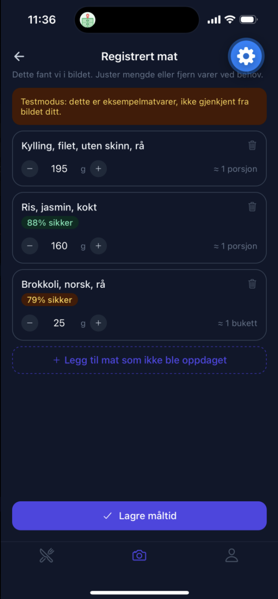
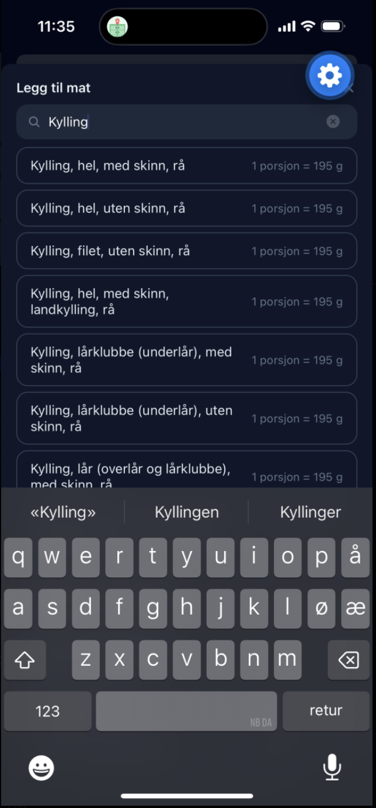

Hvor vi står nå
Siden forrige status har gruppen gått fra planlegging og skisser til faktisk utvikling av ernæringsappen. Vi har ferdigstilt presentasjonen som skal holdes på den obligatoriske samlingen på fredag, der vi gir en oversikt over prosjektet, arbeidet så langt og planen videre.
En stor del av arbeidet i denne perioden har handlet om FatSecret, som er tjenesten vi skal bruke for næringsdata og bildegjenkjenning. Vi har sendt e-post til FatSecret for å høre om det er mulig å få tilgang til deres AI Nutrition API. Tilgangen vi har fått foreløpig, «Premier Free», gir kun tilgang til et amerikansk datasett. Det betyr at mange norske matvarer og produkter ikke er dekket før vi eventuelt får utvidet tilgang, og dette er noe vi må se nærmere på. Bildegjenkjenning, som er en sentral del av måltidsregistreringen for spillerne, må FatSecret selv gi oss tilgang til. Vi har derfor sendt en egen henvendelse om dette. Tilgangen krever også tofaktorautentisering, og vi har undersøkt hvordan vi best kan løse det, blant annet om vi skal opprette en felles e-post for gruppen slik at kontoen ikke er bundet til én person.
Parallelt har vi undersøkt hvordan vi skal bygge videre på backend-delen av prosjektet. Vi har opprettet en database i Supabase med tabeller for brukere, måltider og matvarer, og lastet inn rundt 2 100 matvarer fra Matvaretabellen, slik at vi har et norsk datagrunnlag å teste med. Vi har også opprettet en testbruker og koblet databasen til applikasjonen, som nå kjører på mobilen via Expo Go. I tillegg har vi lagt inn API-nøklene i frontend-koden slik at vi kan begynne å teste mot FatSecret. Dette fungerer foreløpig kun lokalt, og er ment som et midlertidig testoppsett.
Neste steg blir å implementere FatSecret-APIen i applikasjonen og teste hele flyten, fra registrering av et måltid til lagring i databasen. Samtidig følger vi opp henvendelsene til FatSecret om utvidet tilgang og bildegjenkjenning, og avklarer hvordan vi løser tofaktorautentiseringen.



